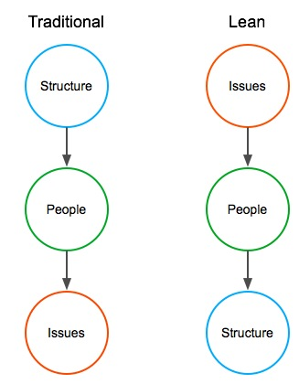

Any software development project can be thought of as a series of problems to be solved. Planning can help a team anticipate problems, but the discovery and solving of problems is a process that continues over the life of the project.
When a new problem is discovered, it’s best to avoid the following sorts of dysfunctional behavior:
As new problems are discovered, instead of falling back on any of these behaviors, it is important to accept the problems as part of the work that needs to be done.
The longer software problems fester, the more expensive they will be to solve, so it is best to face into them and address them early.
This is one reason why code reviews, automated testing, user demos and frequent releases are all good ideas: all of these practices tend to make problems visible before they become more serious, and more difficult to rectify.
Another benefit of early discovery of problems is that it is generally easier for team members at this point to understand how and why they occurred, and to figure out how to reduce the likelihood of similar problems in the future.
Note that making problems visible is a central tenet of Lean, as indicated in this New York Times article from 2007:
“For Americans and anyone, it can be a shock to the system to be actually expected to make problems visible,” said Ms. Newton, a 38-year-old Indiana native who joined Toyota after college 15 years ago and now works at the North American headquarters in Erlanger, Ky. “Other corporate environments tend to hide problems from bosses.”
“Mutual ownership of problems,” is one slogan. Other tenets include “genchi genbutsu,” or solving problems at the source instead of behind desks, and the “kaizen mind,” an unending sense of crisis behind the company’s constant drive to improve.
…some executives like Mr. Konishi complain of managers at Toyota factories who have not adhered to some of the company’s most basic creeds, like allowing workers to stop factory lines when they spot defects. Empowering factory workers has long been central to Toyota’s quality control.
As indicated in this quotation, people will not make problems visible if this results in them being punished for making mistakes. In order to surface problems, the organizational culture must support mutual ownership of problems, and focus on fixing the problems rather than assigning blame.
In some ways, this can be thought of as a reversal of the perspective adopted by most organizations.

In traditional thinking, the emphasis is first and foremost on putting various organizational structures in place – tools, systems, org charts, budgets, plans, performance objectives, etc. – then on coaching people for conformance to those structures, with problems viewed primarily as issues of non-conformance to the structures: mistakes that would not have happened if people had just been following the instructions they had been given.
In lean thinking, this emphasis is reversed. Solving problems is viewed as a primary function for all workers, people are coached to enhance their problem-solving skills, and fluid structures are created and modified to adapt to emergent problems and their solutions.
For more on this topic, see the Pagan Tuna post, “A New Model for Lean Culture.”